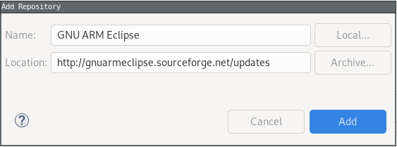
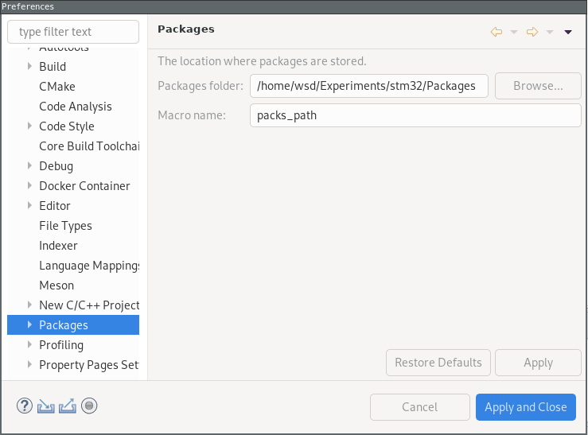
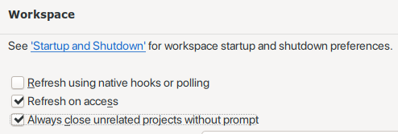
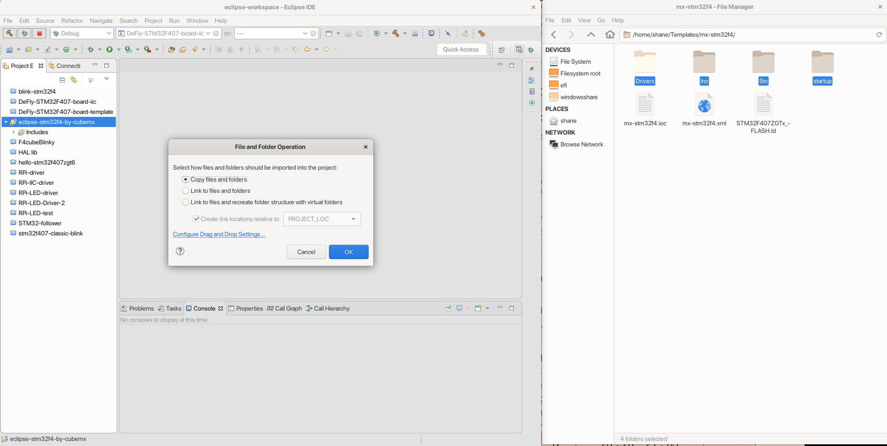

Different from ‘STD’ lib, STM32 ‘HAL’ lib is more compatible to hardware development and is now well-supported by ST company’s Cube IDE.
Prerequisites
ARM gcc compiler
Cross compilers for ARM EABI(bare-metal) target:
arm-none-eabi-gcc
arm-none-eabi-newlib
arm-none-eabi-gdb
Check by arm-none-eabi-gcc -v
Eclipse
eclipse-cpp
Menu > Help > Install new software… > Add
Name: GNU ARM eclipse
Location: http://gnuarmeclipse.sourceforge.net/updates

Then select at least ‘GNU ARM C/C++ Cross Compiler’, ‘GNU ARM C/C++ STM32Fx Project Templates’, ‘GNU ARM J-Link Debugging Support’ and ‘GNU ARM C/C++ Packs’. If there emerges any warnings about key checks, install anyway.
In order to select device, go to check packages location at Window > Preferences > C/C++ > Packs

Debugger
Option A: J-Link
jlink-software-and-documentation
Option B:ST Link
1 | sudo pacman -S st-link |
Run > Run as > External tools setting > new a config called st-linkv2
Note that ${project_loc} is automatically set as a variable of current project location as well as the ${project_name}
Then run.
In the routine, we will get an error from Console like:1
2
3
4
5
6
72019-08-19T18:07:07 INFO common.c: Loading device parameters....
2019-08-19T18:07:07 INFO common.c: Device connected is: F4 device, id 0x100f6413
2019-08-19T18:07:07 INFO common.c: SRAM size: 0x30000 bytes (192 KiB), Flash: 0x100000 bytes (1024 KiB) in pages of 16384 bytes
open(DeFly-STM32F407-board-template.bin) == -1
2019-08-19T18:07:07 ERROR common.c: map_file() == -1
st-flash 1.5.1
stlink_fwrite_flash() == -1
But don’t worry because we will fix it immediately.
Go to Project > Properties > C/C++ Build > Settings > Cross ARM GNU Create Flash Image > General > Output file format, Choose ‘Raw binary’. Then it’s ok:
Note that J-Link is not opensource, so we don’t like it on Linux.
Create new project
Native ARM Eclipse HAL
To enable HAL support, change #if 0 to 1 in _initialize_hardware.c.
New a C project > STM32F4xx C/C++ Project(Toolchains: Cross ARM GCC)

On the next page uncheck ‘Use newlib nano’ because we intend to use HAL library
Folder settings: keep the default.
Select Configurations: both debug and release.
Cross GNU ARM Toolchain: choose arm-none-eabi-gcc
Finish and wait for creating.
Build setting
Windows > Preferences > General > Workspace > Check ‘Always close unerlated projects without prompt.

Error:
1 | /usr/lib/gcc/arm-none-eabi/9.2.0/../../../../arm-none-eabi/bin/ld: /usr/lib/gcc/arm-none-eabi/9.2.0/../../../../arm-none-eabi/lib/thumb/v7e-m/nofp/libg_nano.a(lib_a-writer.o): in function `_write_r': |
This happens might because I use HAL lib but not the newlib, I solved it by open Project > Properties > C/C++ Build > Settings > Cross ARM GNU C++ Linker > Miscellaneous, Uncheck ‘Use newlib -nano (—specs=nano.specs)’ and add ‘-specs=nosys.specs’.
Before:
After:
STD lib
STM32CubeMX generated HAL
We need to install STM32CubeMX for generating HAL fw-lib template codes.1
2
3git clone --depth=1 https://aur.archlinux.org/stm32cubemx.git
cd stm32cubemx
makepkg -si
Then config for our microchip

Now we can generate code for it
Now we can use Eclipse to create a template project. And delete the files. Then drag and copy.

Don’t forget the link file, also we drag and copy into startup folder.
Or you can use mv commands to manipulate and click ‘Refresh’ under Eclipse project.
Next are modifications of projects.
- change .s startup file to .S uppercase one.
- Go to project properties > C/C++ BUild > Settings. Delte other proprocessors and then add Preprocessor:
STM32407xxandUSE_HAL_DRIVER, Add includes files… then linker delete the already existed items and check using startup files, then add our new starup .ld file.
Debug settings
J-Link
Go to Window > Preferences > Run/Debug > SEGGER J-Link to check the path of J-Link.
By default, the GDB server is defined as ${jlink_path}/${jlink_gdbserver}; these two macros are automatically set by the above preference page; for portability reasons, it is recommended to keep this definition in all your debug configurations.
After successfully built the project and see a .elf file generated, go to Debug Configurations and create a new item for J-Link Debug.


ST Link
Add breakpoint in a while statement. Then open the server by Menu > Run > External Tools > ST-Link GDB Server (SWD). Console ouput is like:
Then edit debug configuration:

Then click ‘Debug’ and happily to see:
Click Switch, then we go into debug window:
When encounting a dead loop between two statements, it’s because you didn’t press reset button. Yes, in debug mode, pressing reset button is necessary. So click and voila:
We enter our breakpoint successfully.